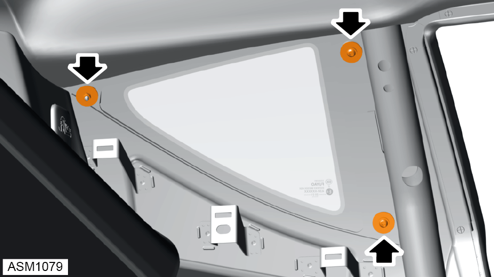
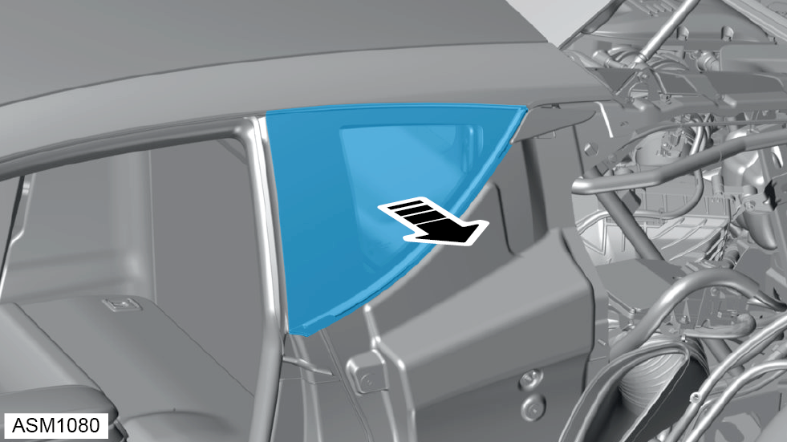

Glass - Rear Quarterlight - Left Side
Print
Operation Code: 11.01.13-02
Removal
- Remove rear fender assembly left side. Refer to procedure.
- Remove rear quarter trim left side. Refer to procedure.

- Remove M6x12 bolts (x2) and washers (x2) securing rear quarterlight window to vehicle. Torque 13 Nm.
- Remove M5 nyloc nut and washer securing rear quarterlight window to vehicle. Torque 10 Nm.
NOTE: Using assistance support glass.

- Remove rear quarterlight glass.
NOTE: Place glass on suitable surface to prevent damage.
Installation
- Installation is the reverse of removal procedure.